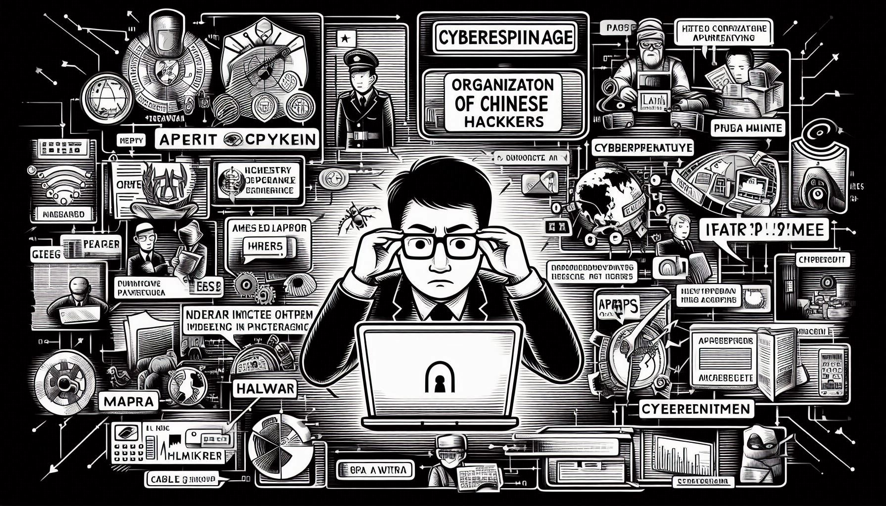
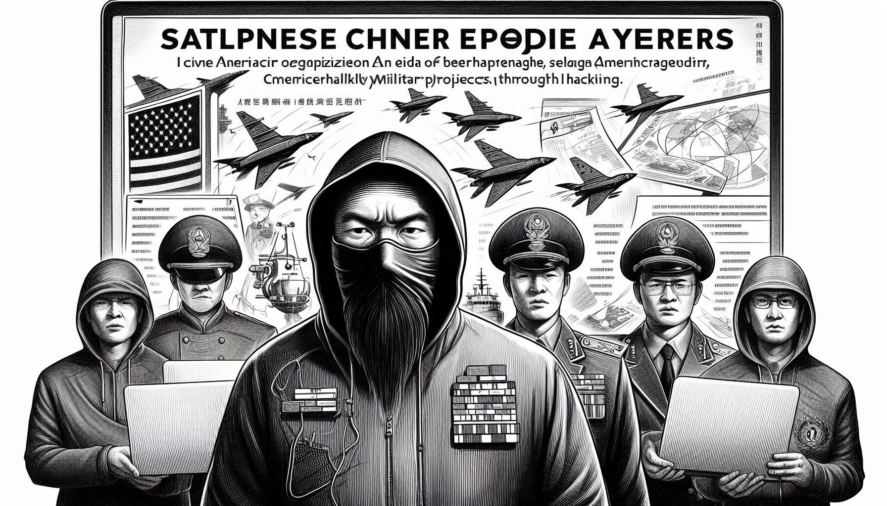
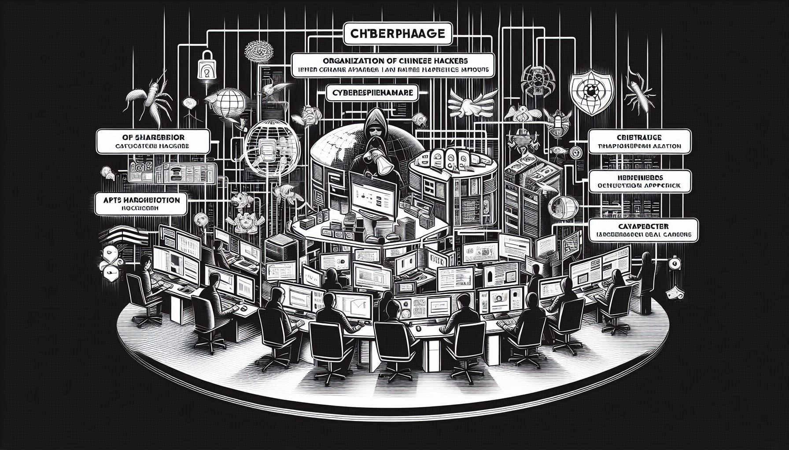

Dragão Vermelho: O Exército de Ciberespiões e Malwares da China
June 13, 2024 | Author: Maiquel Paiva (@untw0)

Introdução
As atividades de espionagem cibernética da China têm sido uma preocupação constante para muitas nações, especialmente os Estados Unidos. Com um histórico de ataques cibernéticos sofisticados voltados tanto para setores estatais quanto privados, a China se estabeleceu como um jogador formidável no campo da guerra cibernética. Este artigo explora o uso da espionagem cibernética e do malware pela China para obter vantagens econômicas, políticas e militares, baseando-se em diversos casos de alto perfil e análises de especialistas.
Contexto Histórico
Os esforços de espionagem cibernética da China podem ser rastreados até o final do século XX. Em 1979, a China fundou a Faculdade de Engenharia Eletrônica do Exército de Libertação Popular (PLA) para treinar soldados em guerra eletrônica, estabelecendo a base para futuras operações cibernéticas. Ao longo dos anos, a China expandiu suas capacidades cibernéticas, visando reduzir a lacuna tecnológica com os Estados Unidos e outras nações ocidentais.
Campanhas de Espionagem Notáveis

Titan Rain
Uma das primeiras e mais conhecidas campanhas de espionagem cibernética atribuídas à China foi a Titan Rain. Iniciada em 2003, esta operação visava empresas de defesa e engenharia técnica dos EUA. Shawn Carpenter, analista de segurança no Sandia National Laboratories, identificou as brechas em 2004, descobrindo que os atacantes haviam exfiltrado dados sensíveis relacionados a tecnologias militares. Os EUA confirmaram posteriormente o envolvimento do governo chinês, marcando um exemplo significativo de espionagem cibernética patrocinada pelo Estado.
Hidden Lynx
Hidden Lynx é outro grupo prolífico de espionagem cibernética chinês conhecido por ataques de alta visibilidade entre 2011 e 2012. O grupo teve como alvo diversos setores, incluindo o Departamento de Defesa dos EUA e empresas de TI, aeroespacial e energia. Um ataque notável foi à Bit9, uma empresa de segurança, onde os invasores roubaram certificados digitais privados para permitir que softwares maliciosos passassem despercebidos. Essa abordagem sofisticada destacou a capacidade da China de se adaptar e inovar em suas estratégias cibernéticas.
APT1 e a Unidade 61398
Em 2013, a empresa de cibersegurança Mandiant divulgou um relatório inovador expondo um subgrupo dentro do PLA, conhecido como Unidade 61398, responsável por uma série de atividades de espionagem cibernética. A investigação da Mandiant revelou a infraestrutura e o malware usados pelo grupo APT1, levando a medidas defensivas significativas por parte dos fornecedores de segurança. Essa atribuição pública forçou a Unidade 61398 a cessar suas operações temporariamente, demonstrando o impacto de expor atividades cibernéticas patrocinadas pelo Estado.
Desenvolvimentos Recentes
Campanha Crimson Palace
Em 2022, a Sophos descobriu a campanha "Crimson Palace", onde grupos patrocinados pelo Estado chinês implantaram malware inédito, como o PocoProxy, para coletar informações militares e econômicas relacionadas ao Mar do Sul da China. Esta operação envolveu múltiplos clusters de ataques trabalhando em paralelo, compartilhando ferramentas e infraestrutura, prática comum entre os grupos de ameaça chineses. A natureza agressiva da campanha sublinha o compromisso contínuo da China em aprimorar suas capacidades de espionagem cibernética.
APT41 (Double Dragon)
APT41, também conhecido como Double Dragon, exemplifica a natureza dupla das operações cibernéticas chinesas, misturando espionagem com crimes cibernéticos. A análise da Mandiant sobre o APT41 revelou seu envolvimento tanto em espionagem patrocinada pelo Estado quanto em ataques cibernéticos motivados financeiramente. Este grupo foi vinculado a vários incidentes de alto perfil, incluindo o roubo de propriedade intelectual e dados pessoais, destacando ainda mais a amplitude das operações cibernéticas da China.
Roubo de Projetos Militares e Científicos

O uso de malware e espionagem cibernética permitiu à China roubar projetos militares e artigos científicos, poupando anos de estudos e desenvolvimento. Por exemplo, ataques como o Titan Rain resultaram no roubo de informações críticas sobre aeronaves militares dos EUA, permitindo que a China desenvolvesse suas próprias versões em menos tempo e com menos recursos. Esse tipo de espionagem não só economiza dinheiro e tempo, mas também acelera o avanço tecnológico, diminuindo a dependência de pesquisa e desenvolvimento internos.
ㅤAtaques a universidades e instituições de pesquisa também têm sido comuns, visando roubar avanços científicos e tecnológicos. Essas operações permitiram à China obter acesso a pesquisas de ponta em áreas como inteligência artificial, biotecnologia e tecnologia quântica. A espionagem cibernética possibilita a transferência rápida de conhecimento, que de outra forma levaria anos para ser desenvolvido independentemente.
Organizações Criminosas Patrocinadas pelo Governo Chinês

Advanced Persistent Threats (APTs)
Os grupos de APT são frequentemente patrocinados e bem protegidas pelo governo chinês e realizam uma série de operações de espionagem. Além do APT1 e APT41, outros grupos notáveis incluem APT10 (também conhecido como Stone Panda), APT3 (também conhecido como Buckeye) e APT27 (também conhecido como Emissary Panda). Esses grupos têm causado prejuízos significativos a diversas nações ao redor do mundo, especialmente aos Estados Unidos, ao atacar empresas de tecnologia, defesa, energia e instituições financeiras.
APT10
APT10, conhecido por suas campanhas "Cloud Hopper", visava provedores de serviços gerenciados (MSPs) para acessar as redes de seus clientes e roubar propriedade intelectual valiosa e dados sensíveis. Empresas como a IBM e a HPE foram alvos desses ataques, resultando em compromissos significativos de dados.
APT3
APT3 foi vinculado a ataques contra alvos em setores críticos, como aeroespacial e defesa. Eles são conhecidos por desenvolver e usar exploits de dia zero para comprometer suas vítimas, mostrando um alto nível de sofisticação em suas operações.
APT27
APT27 focou em ataques contra entidades governamentais e empresas de alta tecnologia. Seus ataques envolveram o uso de backdoors sofisticados e táticas de movimento lateral para manter o acesso a longo prazo às redes comprometidas.
Implicações Estratégicas e Contramedidas
As implicações estratégicas da espionagem cibernética chinesa são profundas, afetando a segurança nacional, a estabilidade econômica e as relações internacionais. Os EUA e seus aliados têm reconhecido cada vez mais a necessidade de contramedidas coordenadas. Iniciativas como a parceria Five Eyes, que inclui os EUA, Reino Unido, Canadá, Austrália e Nova Zelândia, visam melhorar a defesa coletiva contra ameaças cibernéticas.
ㅤAlém disso, agências federais dos EUA, como o FBI, intensificaram os esforços para aumentar a conscientização e melhorar as práticas de cibersegurança entre as entidades do setor privado. Medidas legislativas e indiciamentos públicos, como os contra operadores do PLA, servem tanto como um dissuasor quanto como uma declaração política contra a espionagem cibernética.
Conclusão
As atividades de espionagem cibernética da China, são caracterizadas por malware avançado e estratégias de ataque sofisticadas, continuam a representar desafios significativos globalmente. Compreender a história e a evolução dessas operações permite que as nações se preparem melhor e defendam contra futuras ameaças. A cooperação internacional contínua e estruturas robustas de cibersegurança são essenciais para mitigar os riscos associados à espionagem cibernética patrocinada pelo Estado.